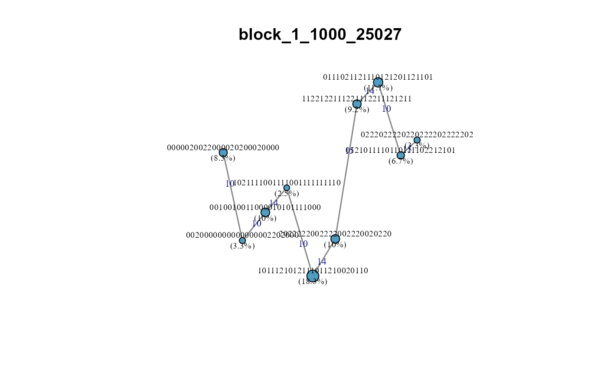

Plot a Minimum-Spanning Haplotype Network for One LD Block
Source:R/haplotype_analysis.R
plot_haplotype_network.RdDraws a minimum-spanning network (MSN) of haplotype alleles within a single LD block using igraph. Nodes represent alleles; edge weights are Hamming distances (number of differing SNP positions). Node size is proportional to allele frequency. Optional colour by population or phenotypic group.
Usage
plot_haplotype_network(
haplotypes,
block_id,
groups = NULL,
min_freq = 0.02,
missing_string = ".",
title = NULL,
palette = NULL
)Arguments
- haplotypes
Named list from
extract_haplotypes.- block_id
Character. Name of the block to visualise (must be in
names(haplotypes)).- groups
Named character vector mapping individual IDs to group labels (used for node pie-chart colouring).
NULL= all one colour.- min_freq
Numeric. Alleles below this frequency are dropped before plotting. Default
0.02.- missing_string
Character. Missing haplotype placeholder. Default
".".- title
Character. Plot title. Default = block_id.
- palette
Character vector of colours for groups.
NULLuses a built-in palette.
Examples
# \donttest{
data(ldx_geno, ldx_snp_info, ldx_blocks, package = "LDxBlocks")
haps <- extract_haplotypes(ldx_geno, ldx_snp_info, ldx_blocks)
plot_haplotype_network(haps, block_id = names(haps)[1])

# }